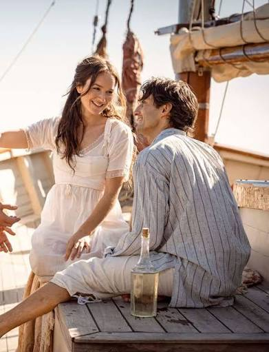
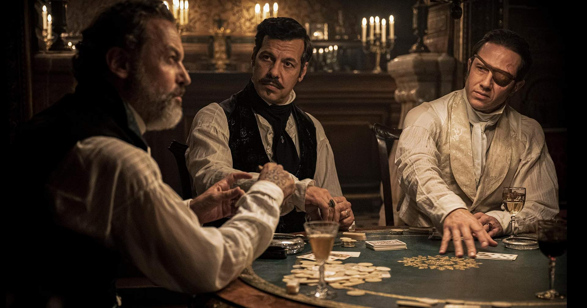
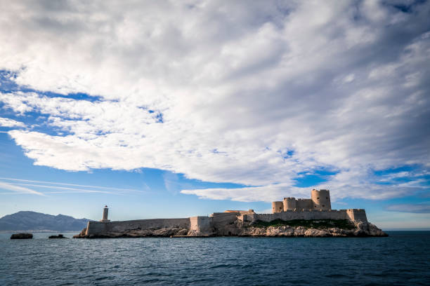
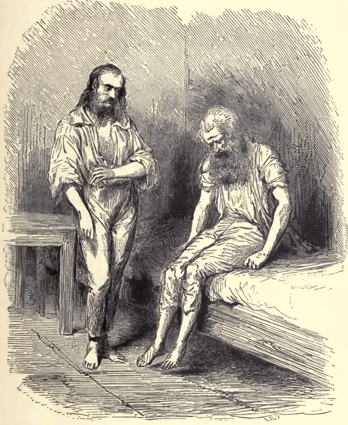
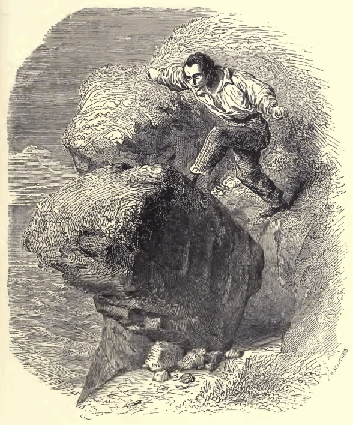
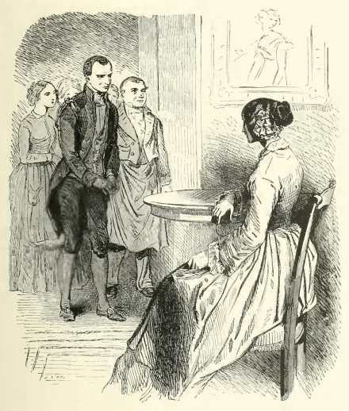
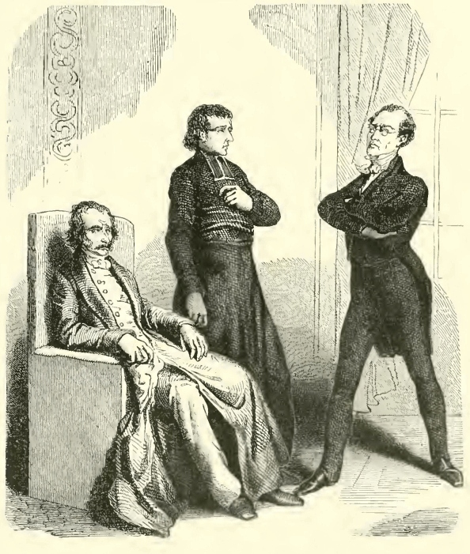
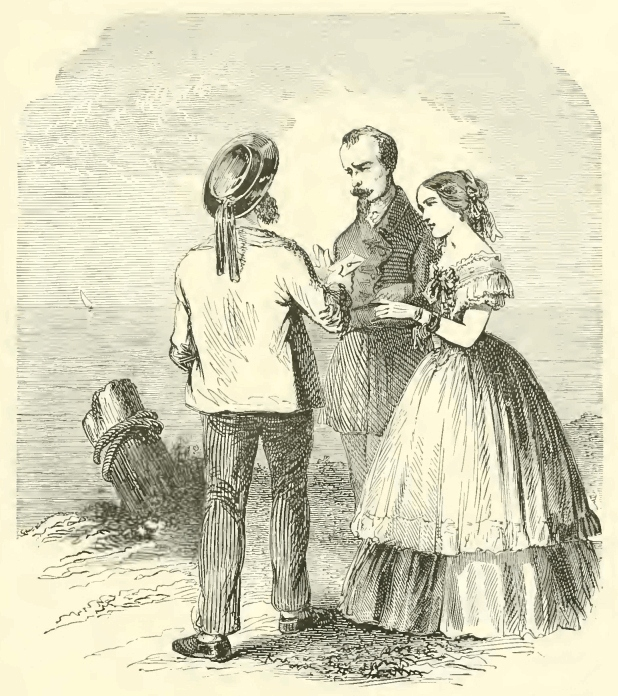

Resumos originais do romance. A divisão abaixo é editorial e não reproduz o sumário da obra.
Aviso: esta página revela acontecimentos e desfechos da história.
I — Edmond Dantès
Um marinheiro regressa a Marselha com razões para confiar no futuro.

Edmond e Mercédès após a promoção de Edmond para Capitão.Ler o capítulo: I — Edmond Dantès
O trabalho a bordo do Pharaon e o apoio de Monsieur Morrel aproximam Edmond do comando do navio. Ao lado de Mercédès e de seu pai, ele imagina uma felicidade simples, sem perceber os ressentimentos ao redor.
II — A Traição
Ciúme, ambição e medo político convergem contra Edmond.

A denúncia e os homens envolvidos na conspiração.Ler o capítulo: II — A Traição
Danglars redige a denúncia e Fernand a encaminha. Ao descobrir que a carta levada por Edmond envolve seu próprio pai, Noirtier, Villefort prefere proteger a carreira a reconhecer a inocência do prisioneiro.
III — Château d’If
A prisão apaga a rotina e rompe os vínculos do jovem com o mundo.

Château d’If, cenário real de uma prisão ficcional.Ler o capítulo: III — Château d’If
Sem julgamento que lhe permita se defender, Edmond perde a esperança de ser ouvido. O isolamento no Château d’If torna o tempo uma experiência de abandono, até que ruídos na parede anunciam outro prisioneiro.
IV — Abbé Faria
O encontro com Faria transforma o cárcere em lugar de aprendizado.

O aprendizado com Faria — ilustração do romance. Fonte e licençaLer o capítulo: IV — Abbé Faria
O abade compartilha línguas, história e conhecimentos científicos. Também ajuda Edmond a compreender a trama que o condenou. A amizade devolve um sentido à vida, mas a descoberta dos culpados alimenta a vontade de vingança.
V — O Tesouro
Um segredo herdado de Faria permite imaginar uma nova existência.

A gruta do tesouro — ilustração do romance. Fonte e licençaLer o capítulo: V — O Tesouro
Após a morte do abade, Edmond escapa ocupando seu lugar no saco funerário lançado ao mar. Livre, chega à ilha de Montecristo e encontra a fortuna dos Spada indicada pelo amigo.
VI — O Conde de Monte Cristo
A riqueza financia uma identidade capaz de circular entre os poderosos.
O Conde de Monte Cristo — ilustração do romance. Fonte e licençaLer o capítulo: VI — O Conde de Monte Cristo
Edmond observa o destino de antigos amigos e inimigos. Recompensa a lealdade dos Morrel e assume diferentes nomes para agir sem ser reconhecido. O conde transforma informação, tempo e dinheiro em instrumentos de influência.
VII — A Vingança
Cada adversário encontra no próprio passado o princípio de sua queda.

A acusação — ilustração do romance. Fonte e licençaLer o capítulo: VII — A Vingança
A reputação de Fernand, os negócios de Danglars e os segredos de Villefort tornam-se pontos de pressão. Monte Cristo organiza encontros e revelações, acreditando poder administrar a justiça com precisão.
VIII — As Consequências
A punição ultrapassa os culpados e atinge pessoas inocentes.

Expiação — ilustração do romance. Fonte e licençaLer o capítulo: VIII — As Consequências
A morte do pequeno Édouard, filho de Villefort, confronta o conde com o alcance de suas intervenções. O sofrimento que produz o obriga a duvidar de seu direito de decidir sozinho o destino dos outros.
IX — Esperar e ter esperança
O desfecho abre espaço para o perdão e para um futuro ainda possível.

Reencontro e esperança — ilustração do capítulo final. Fonte e licençaLer o capítulo: IX — Esperar e ter esperança
Valentine e Maximilien se reencontram. Edmond poupa Danglars e parte com Haydée, deixando aos jovens uma mensagem de paciência e esperança. A conclusão recoloca a vida para além do cálculo da vingança.